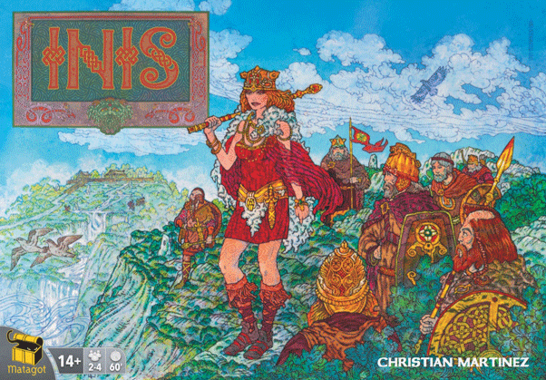
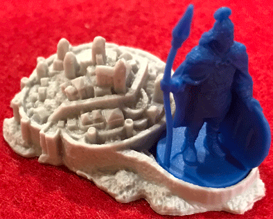

This week Board Crazy reviews Inis, a board game designed by Christian Martinez and published by Matagot. Inis is an area control game where each player controls a celtic clan. This game requires patience, resourcefulness, and when the time’s right, violence. Check out our gameplay of Inis!

D reviews Inis
 (Author’s
note: this review is meant to accompany our gameplay video and will not
go in-depth on the game’s rules. If you’re interested in learning how
the game is played, please watch the video. It’s not bad.)
(Author’s
note: this review is meant to accompany our gameplay video and will not
go in-depth on the game’s rules. If you’re interested in learning how
the game is played, please watch the video. It’s not bad.)
The Brenn Token – This token goes to the Capital territory’s chieftain.
I’ll be honest; I’m really not sure how to start this review of Inis. I’ve been trying to compile my thoughts on the game over the last few days, but the more I think about it, the more I realize that it really hasn’t resonated with me in a meaningful way. I certainly don’t dislike it, but it hasn’t clicked with me yet in the way that I expected it to, which is a bummer. I’m a fan of area control games and this one offers some interesting mechanics which set it apart from its genre counterparts; however I think they may be the main reason for my mixed feelings.
Citadel of the Capital Territory
I would say that Inis’ biggest break from conventions is the way that combat is downplayed. In fact, it’s probably fair to say that it is outright discouraged. Given that one of the three ways to win the game is to be the chieftain over six of your opponents’ clans, it’s typically not in your best interest to remove your rivals from the board. Peaceful co-existence is a surprisingly common occurrence, especially early in the game. This is a neat twist and certainly makes you think harder about your strategy, but I have some qualms with how the “clashes,” or lack thereof, affect and interact with the game’s other elements. For starters, the clashes, when they happen, are underwhelming. There are no leaders or combat cards (aside from some Epic Tales Cards) to play before or during a clash to allow for surprises or tide changes, nor are there options for support from neighboring areas. They’re simply a matter of players losing a clan or a card (they’re choice) back and forth until one side is either wiped out or they retreat. And considering that the result is usually obvious before the clash even happens, most will end with a quick retreat. I like the idea of an area control game with a smaller focus on battles, but that doesn’t excuse making the battles boring.
The Geis – When an opponent plays and Action card: Ignore the effect on the Action card just played and discard it..
This issue sort of ties into another one I have with Inis, which relates to the game’s Action Cards. The cards offer a good variety of options and are well-balanced, but in 3- or 4-player games about a quarter of them are related to the clashes to some degree. This is a bit of an irritant, because certain cards, like Warlord, are effectively useless for most of the game unless you’re attempting some bizarre warmonger strategy. This typically will put at least one player at a small disadvantage on every turn. The game would be better if every card a player chose was useful for them on that turn, and if there were even a few more options included for Action Cards, this issue could have been easily remedied. All of that might make it sound like I actually do dislike Inis, but I really don’t. There are several things worth praising about this game.
For starters, it’s gorgeous. In fact, there are few (if any) games in our collection that I enjoy just looking at as much as this one. The cards are lovely and the craggy puzzle pieces that make the game board are awesome. They all really help create an atmosphere for this game that makes
Cathbad’s Word – At the start of the Assembly Phase: Choose an Action card to be set aside for the Assembly phase. At the end of this phase, add that Action card to your hand, then set aside 1 Action card from your hand.
you feel like you’re exploring an ancient and mysterious Celtic land. The artists, Dimitri Bielak and Jim Fitzpatrick, deserve high praise for their work on this game. The use of Irish legends and heroes is also a bold and inspired choice. These characters are probably going to be unfamiliar to most players and their names will probably be butchered by most as well (guilty, I’m sure), but it’s fun to learn about different cultures and board games offer an interesting way to do so. Most importantly, though, the game is often fun. The card drafting process is always exciting, even if it ends in frustration, as is the addition of a new territory to the map. And blocking your opponent’s big move with Geis is always satisfying.
I kind of alluded to it above, but I feel like Inis is a game that might benefit from being a little bit bigger. More cards, more pieces, more difficult win conditions, etc. The game can be played pretty quickly, which is commendable, but it often feels like the game ends just as it’s about to get interesting. A slight expansion could help with this momentum issue and improve my opinion of the game significantly. As it is now, Inis is a beautiful and reasonably fun, but flawed game that I will give a mild recommendation.
D’s Rating: Three Stars out of Five.
Will reviews Inis
 When
I play a strategy game, whether it’s area control or resource
management related, I always look for one thing first: accessibility.
It’s true – a lot of tabletop gamers want games with extensive rulebooks
and lengthy playtimes (think Twilight Imperium), and that’s fine. On
the other hand, there are many of us who would rather enjoy something
that makes us think without straining our brains too much; something
that’s learnable and can be completed in a few hours. For me, Christian
Martinez’s Inis is just that: a relaxed, intelligent, and
straightforward board game.
When
I play a strategy game, whether it’s area control or resource
management related, I always look for one thing first: accessibility.
It’s true – a lot of tabletop gamers want games with extensive rulebooks
and lengthy playtimes (think Twilight Imperium), and that’s fine. On
the other hand, there are many of us who would rather enjoy something
that makes us think without straining our brains too much; something
that’s learnable and can be completed in a few hours. For me, Christian
Martinez’s Inis is just that: a relaxed, intelligent, and
straightforward board game.
Ogmas’s Eloquence – During a clash, as a maneuver: The clash ends immediately.
One of the first things that drew me to Inis was the game’s artwork, which is some of the coolest I’ve seen in quite some time. The Celtic setting is unique, but more than that, it’s beautiful. The cards, especially the epic tale cards, are strikingly drawn. Also, I had never heard of most of the Irish gods and heroes portrayed on these cards, so I actually learned something too. And then there are the tiles, which are among the most original I’ve ever laid eyes on. The jagged edges somehow fit perfectly together, and no board will ever be the same by the end of a play session. I could go on and on about the aesthetics of Inis – they’re that good.
When it comes to gameplay, one of the biggest compliments I can pay to this game (or any game, really) is that it’s rather easy to learn. Basically, there are two phases: a card-drafting assembly phase, and the action phase. Card drafting is really fun and adds a ton of strategy in regards to which cards you’re going to choose to pass on. This phase can take a while if you’re playing with someone who’s newer to the game, so be patient. After the cards are drawn and passed, the rest of the game occurs. You can play your cards, move around the board with your clan figures, and attack your opponents in your quest for territory. One thing that disappoints me about Inis is that the combat system is rather bland. There’s no rolling of dice or utilizing attack cards; you simply declare a battle and start removing clans from the board. In fairness, there’s a bit more nuance to it than that, but that doesn’t change the fact that the combat is underwhelming. After these phases are completed, the round resets and you do it again, unless someone has met one of the victory conditions.
The Pretender Token
If I had to pick one thing that bothered about Inis, it would have to do with the victory conditions. Since there’s more than one, it presents a challenge to the players to be constantly aware of everything your opponents are doing and everywhere their clans are located. It’s too easy for a player to go under the radar and sneak in a victory without the other players noticing, and this is a major problem, especially for inexperienced players. There’s nothing more frustrating than a board game session starting to get good, only to end suddenly and anti-climactically. However, I could see how a group of Inis veterans could use the multiple victory conditions to add intrigue and excitement to their session. Still, for a game that’s so straightforward and fun, it’s annoying that there’s a hardcore level of attention required to win (or prevent others from winning).
Regardless of any complaints I might have about the combat or victory systems, I really like Inis. The artwork and tile design are among the most stunning I’ve ever seen, and most of the gameplay is entertaining and quick moving. Board gamers of all kinds could play Inis, and that accessibility might be its best trait. Then again, that art design…
I give Inis a: B
Graham reviews Inis
 As
I do with most games, I researched Inis quite a bit before I played it.
The artwork was fascinating, the theme was exciting, and my
expectations were high. Unfortunately, Inis didn’t quite live up to the
expectations. Don’t get me wrong, there are a lot of great things about
Inis and overall, I think it is a good game.
As
I do with most games, I researched Inis quite a bit before I played it.
The artwork was fascinating, the theme was exciting, and my
expectations were high. Unfortunately, Inis didn’t quite live up to the
expectations. Don’t get me wrong, there are a lot of great things about
Inis and overall, I think it is a good game.
Fun Fact: The meadows territory tile was the original inspiration for the Windows XP background.
The artwork in Inis is probably the best I have seen in a board game – it’s unique and immersive. The game pieces are well-crafted and look like what I imagine a Celtic clan members and sanctuaries would look like. The territory tiles, while maybe a little unusual and unnecessary in shape, are fun and distinctive. Also, the game is very well-balanced – there are checks and balances to every card and action in the game. Some cards are a little more useful in the beginning of the game, and some are more useful towards the end of the game. This balance is also noticeable in the over-arching strategies within Inis. At times, I found benefit in playing more defensively (building clans or sanctuaries); while other times, I needed to be more aggressive (migrating). One thing I would like to note about Inis: being aggressive doesn’t necessarily mean attacking. At least the few times I’ve played, it feels that most clashes don’t end in battle. Maybe it’s a lack of knowledge on my part and Celtic clans were very peaceful, but when I think of Celtic clans clashing, I imagine an epic and brutal battle with little to no survivors on either side. Even the times when the clashing ended in battle, it still seemed like a civil affair. All in all, the clashes were underwhelming.
Another aspect of the game I liked was the card drafting – it was exciting trying to out think and deceive my opponents. I wish there were more cards to choose from, but it’s still one of the more exciting parts of the game. Unfortunately, this leads me into my main criticism of the game: card drafting was about as exciting as the game got for me. I was never as passionate while playing Inis as I was when I was researching Inis. It’s good at best and mediocre at worst. Sure, it’s exciting at times, but it never really has you on the edge of your seat. It doesn’t have any glaring weaknesses, but other than the artwork, there really isn’t anything that gets me craving more of it. Despite this, there are reasons to play Inis, as it is a very well designed and thought-out game. I give it a one thumb up.
Holland says
Gotta agree that the end was underwhelming. I didn’t really see it coming as a viewer (despite knowing the video length), and it seems too easy for someone to win who didn’t necessarily have the best strategy or whatever. BUT your videos are fun, and I am willing to give it a go. I give it a standard smiley face emoji.